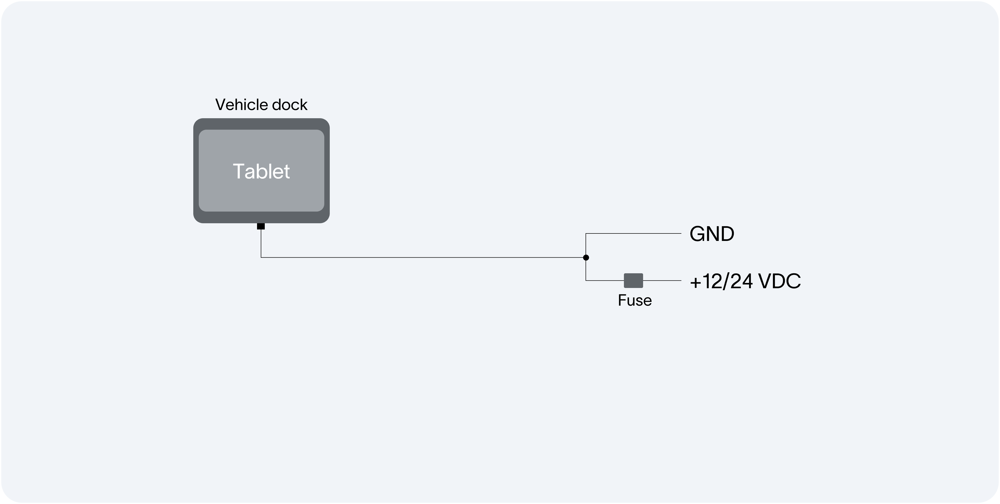

Vehicle Installation - Devices shipped from January 2024 using kiosk mode¶
Attention
This guide is applicable to devices shipped from January 2024 and later. If your device was shipped earlier please select the correct installation guide here:
Attention
Please read through the full installation guide and take care to follow each step as listed below.
Table of contents
Chose your installation type:¶
Multiple screens

One main screen and one or more receiving screens are installed in the vehicle. The main screen should be permanently connected to the vehicle’s Tetra terminal. We recommend mounting the main screen as the driver’s display.
Receiving screens can be used freely within and around the vehicle up to 50 meters from the vehicle, depending on the environment.
When installing a multi-screen solution, first install the main screen and then all receiving screens.
Installation instructions:
Single device
Only one screen/device is installed in the vehicle.
Remember that a single-screen solution can be expanded to a multi-screen solution at any time if the need arises.
Installation instructions:
General installation: Main device or single device¶
Install the components according to the system diagram.
Choose a suitable location for the tablet
For the best driver environment, the driver’s tablet should be mounted to the right of the driver and as high up as possible without obstructing the view. Aim for the driver to see the screen with just an eye movement. The need for head movement should be avoided.
The tablet can be mounted in both horizontal and vertical orientations.
Install the tablet and its mount/holder according to the supplied instructions.
Electrical installation
Power connection: Connect the holder to 12/24V
Fuse: Use a 2A fuse minimum
Constant power source: Make sure to connect the holder to a constant power source in the vehicle.
Connect the PEI-cable
Connect the Tetra radios PEI-interface to the USB-port on the tablet holder/dock with the supplied cabling.
Fixate all cables and cable joints Make sure that all of the cables that are used are fixated with cable ties and that the USB cable that is used between the Tetra radio and the tablet holder/dock is mounted with the included clip and screws (supplied with the holder/dock) towards the vehicle dock.
Make sure all the cable joints are firmly attached and secured to each other.
Insert a SIM card into the tablet
Mount the tablet in its holder in the vehicle
Start the tablet by pressing and holding the power button
Once the connection to the radio is established the following pop-up appears. Check the box “Always open Vehicles Services…” and press “OK”. If the pop-up does not appear, disconnect and connect the device from the dock

Await for Vehicle Services to start automatically. Once started chose the certificate named “User…” and press “Select”
Close all open applications through the overview menu, accessed by either swiping from the bottom to the middle of the screen (applies to S6/S7) or pressing the physical button labeled “|||” (applies to Active4 Pro). Then click on “Close all”
You can now enter the kiosk mode by swiping from the middle of the screen an upwards to open the app-menu

Click on “ManagedHomeScreen”
Launch ‘Vehicle Services,’ which you can find on the home screen

Log in using the credentials found on the label inside the tablet’s packaging, and then follow the instructions
If prompted, grant the necessary permissions to Vehicle Services:
Access to the device position: Device position should be allowed always when the app is running.
If you have installed a Main device you may now install your Receiving devices
Installation instruction Receiving devices
Always remember to verify the functionality of the installation prior to putting the system in live use!
Are you an administrator and want to learn more about managing the kiosk mode? Read our guide here
You are now ready to start using Evam!
General installation: Receiving device¶
Install the components according to the system diagram.

Install the tablet and its mount/holder according to the supplied instructions
Electrical installation
Power connection: Connect the holder to 12/24V
Fuse: Use a 2A fuse minimum
Constant power source: Make sure to connect the holder to a constant power source in the vehicle.
Fixate all cables and cable joints
Make sure that all the cables that are used are fixated with cable ties.
Make sure all the cable joints are firmly attached and secured to each other.
Insert a SIM card into the tablet
Mount the tablet in its holder in the vehicle
Start the tablet by pressing and holding the power button
Once the connection to the radio is established the following pop-up appears. Check the box “Always open Vehicles Services…” and press “OK”. If the pop-up does not appear, disconnect and connect the device from the dock
Await for Vehicle Services to start automatically. Once started chose the certificate named “User…” and press “Select”
Close all open applications through the overview menu, accessed by either swiping from the bottom to the middle of the screen (applies to S6/S7) or pressing the physical button labeled “|||” (applies to Active4 Pro). Then click on “Close all”
You can now enter the kiosk mode by swiping from the middle of the screen an upwards to open the app-menu
Click on “ManagedHomeScreen”
Launch ‘Vehicle Services,’ which you can find on the home screen
Log in using the credentials found on the label inside the tablet’s packaging, and then follow the instructions
If prompted, grant the necessary permissions to Vehicle Services:
Access to the device position: Device position should be allowed always when the app is running.
Always remember to verify the functionality of the installation prior to putting the system in live use!
Are you an administrator and want to learn more about managing the kiosk mode? Read our guide here
You are now ready to start using Evam!